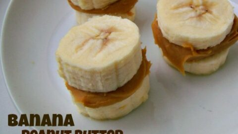

Peanut Butter Bananas

Description
This is one of my favortite snacks from when I was a kid. All you need is peanut butter and bananas. Its very simple and requires little ingredients so it should make the perfect breakfast side or midday snack.
Ingredients
- Peanut butter
- Fresh Bananas
- Knife
Steps
- Grab your banana and make a cut down the middle with the peel intact
- Pick up peanut butter with knife
- Smear the peanut butter inside the slit made previously
- Peel the banana and enjoy!
back to main page